part of Course 322 Two Dimensional Convolutional Neural Networks
tl;dr
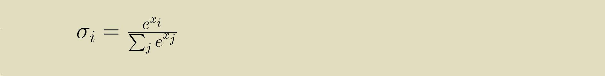
In Python:
softmax = exp(x) / sum(exp(x))
Softmax is an activation function that turns an array of values into probability mass function where the weight of the maximum value is exaggerated.
Why softmax?
Softmax is tailor made for multi-class categorization problems like the MNIST or CIFAR datasets. It's ideal for converting the result of a linear layer into vote for a category. It works best across a wide range of input values, so it takes the place of other activation functions, like sigmoid (logistic) or rectified linear units (ReLU). The softmax emphasizes the strongest vote and so focuses the learning on the parameters that will strengthen that vote. It's also relatively cheap to compute.
Probability mass function (PMF)
One reason softmax is so appealing is that it fits in well with statistics and information theory. It is a probability mass function, a collection of values, each associated with a separate and exclusive outcome, that are all between zero and one and add up to one. This lets us interpret the output of the softmax as degrees of belief. If a softmax layer gives us the values .2, .7, and .1 for the categories "cat", "dog", and "elephant", we can explain that as the model believing with 20% strength that the image contains a cat, 70% that it contains a dog, and 10% that it contains an elephant. Alternatively, if we were using the model to place bets, we would estimate the odds of there being an elephant at 1:9, a cat at 1:4 and a dog at 7:3. All the tricks we can do with probabilities, we can now apply to the result of the softmax, a PMF of our expectations about the category membership of the example.
PMF normalization
You can make a PMF out of any set of values, provided they aren't negative. Counted values are a classic case. Imagine I was sitting on the street corner watching people drive by. I could count vehicles by type: car, truck, bicycle. Suppose that after an hour I had counted 100 bicycles, 300 trucks, and 600 cars. Now I want to figure out how likely it is that the next vehicle will be a bicycle. I can turn my histogram of counts into a probability mass function by dividing each count by the sum of all the observations I've made (100 + 300 + 600 = 1000). This gives a PMF of bicycles = .1, trucks = .3 and cars = .6.
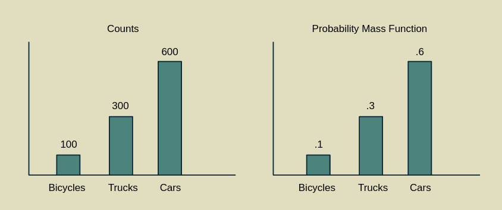
This method of converting counts (frequencies) to probabilities is a hallmark of a frequentist approach to statistics, as opposed to a Bayesian approach.
Expressed in equations, we start with an array of values [x1, x2, ... xN-1, xN], which we can call x for short. To convert x into the PMF p(x) we can perform PMF normalization.
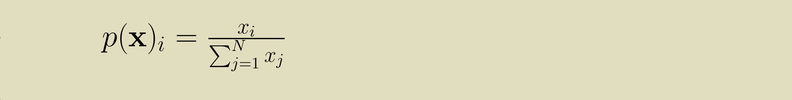
Softmax as a PMF normalization of exponentials
Softmax is very like a PMF normalization, with the exception that all of the elements of x are first passed through an exponential function (e is raised to power of each xi).
This does two good things. First, it makes sure that all the elements of x are positive. e raised to any power is a positive number. This lets us apply a PMF normalization to any array of numbers without worrying about whether they are positive or negative.
Second, it stretches out the difference between the largest value and the second largest value, compared to the differences between the smaller values. This elongation of the upper part of the value range is what makes the function maximum-like. It takes the largest value and further isolates it from the rest of its cohort. It extends the lead of the front-runner over the rest of the pack. Because it leaves the other elements with some non-zero value, it earns the name "soft" max.
After taking the exponential function of x, the PMF normalization can proceed normally.
Gotchas
Softmax is an activation function in its own right. If you use it together with another activation function that limits the range, like logistic or hyperbolic tangent, then its effectiveness will be greatly diminshed. Softmax is sensitive to the differences between values, so you don't want to compress them into a small range before applying it.
Because it's a PMF, softmax is appropriate for categorization tasks where each example only belongs to one category. The whole premise behind the softmax is that it emphasizes the element with the highest value, the category with the greatest affinity, at the expense of all others. Multi-label classification problems (say, where a photo could be tagged as both "person" and "dog" if it has both a person and a dog in it) break this assumption.
For multilabel problems the logisitic activation function is your best bet in theory. It represents the affinity of every label separately on a zero to one scale. For some medical examples, check out this article by Rachel Draelos. However, some recent work suggests that softmax works well in this situation too. It may be worth trying both and comparing the results. (Thanks to Dmytro Mishkin for pointing this out.)
Derivative of a PMF normalization
To use softmax in a neural network we need to be able to differentiate it. Even though it doesn't have any internal parameters that need adjusting during training, it is responsible for properly backpropagating the loss gradient so that upstream layers can learn from it. We'll start by working through the derivative of PMF normalization before extending it to the full softmax function.
Because x is an array, the partial derivative of the p(x) with respect to x is a collection of derivatives with respect to each element of x.
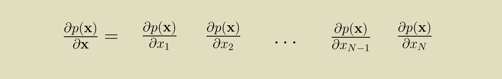
Because p(x) is also an array, the partial derivative of the p(x) with respect to x is a two dimensional array of derivatives of each element of p(x) with respect to each element of x.
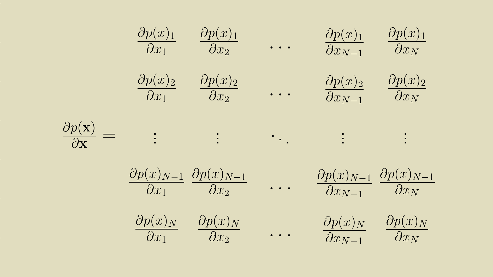
We can express this collection of partial derivatives with some indexing shorthand.
for all values of i and k between 1 and N. Then using the Quotient Rule
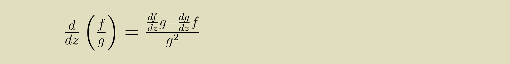
we can break up the PMF normalization equation up into its numerator and denominator and work through the derivative.
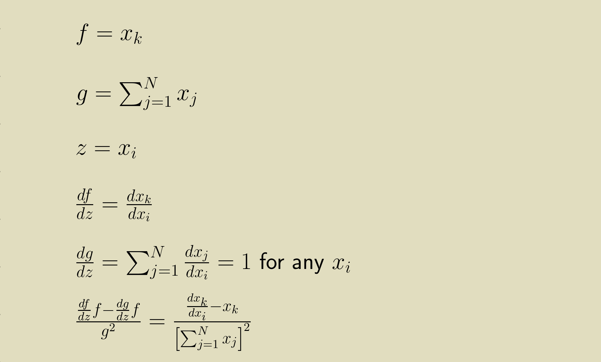
There are two possibilities. First we can solve it for when i and k are different.
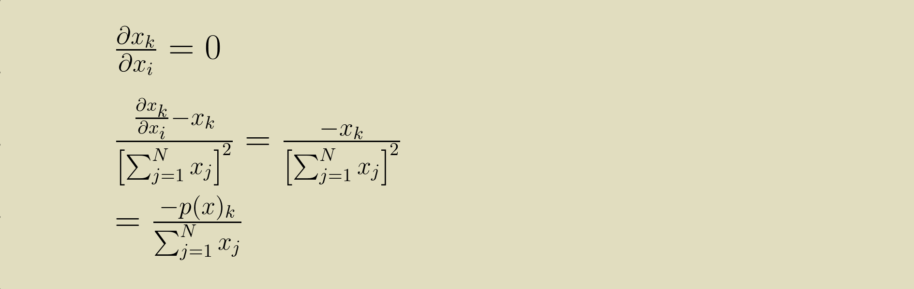
Then we can solve it for when i and k are the same.
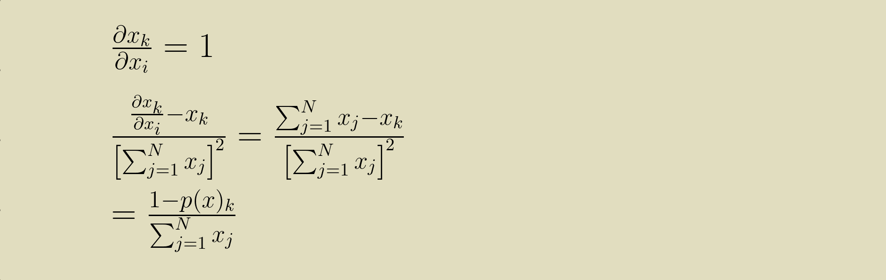
A really slick way to represent this is to use a Kronecker delta function
This lets us write the one-liner
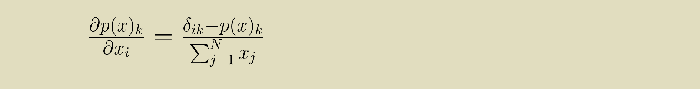
Note that the value of the PMF is also in the derivative. This will be a recurring theme. Keep in mind that this is shorthand for the full matrix of partial derivatives.
Derivative of softmax
Having the partial derivative of the PMF with respect to all of its input elements (also called the Jacobian) gives us a strong start for calculating the Jacobian of the softmax. We'll retrace our steps, making the modifications we need to for softmax's exponential functions. Starting from the expression for the Jacobian of the softmax
we can again break the numerator and denominator of the softmax out for differentiation using the Quotient Rule.
This expression can be simplified further.
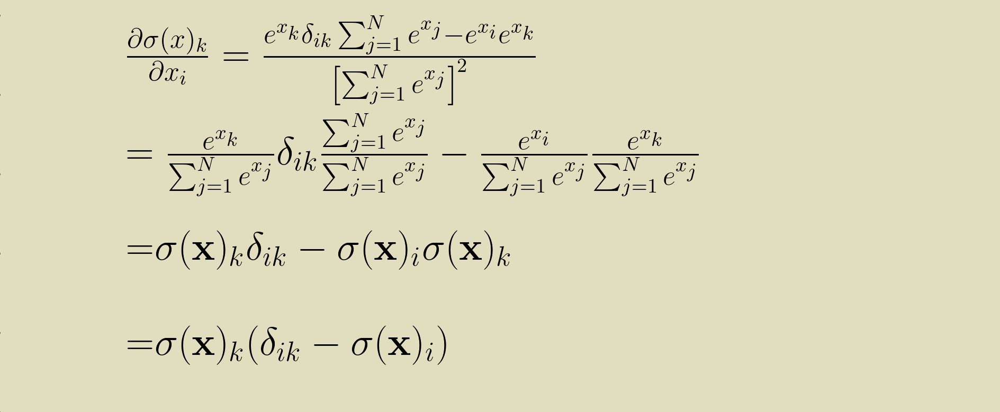
And with a slight shortcut in the notation we can get to this terse statement for the partial derivative of the softmax with respect to its inputs.
Backpropagation
Having the derivative of the softmax means that we can use it in a model that learns its parameter values by means of backpropagation. During the backward pass, a softmax layer receives a gradient, the partial derivative of the loss with respect to its output values. It is expected to provide to upstream layers a partial derivative with respect to its input values. These are related through the softmax derivative by the product rule: the input gradient is the output gradient multiplied by the softmax derivative.
Python implementation
The Python code for softmax, given a one dimensional array
of input values x is short.
import numpy as np
softmax = np.exp(x) / np.sum(np.exp(x))The backward pass takes a bit more doing. The derivative of the softmax is natural to express in a two dimensional array. This will really help in calculating it too. We can make use of NumPy's matrix multiplication to make our code concise, but this will require us to keep careful track of the shapes of our arrays. The first step is to make sure that both the output of the softmax,
softmax, and the loss gradient,
grad, are both two dimensional arrays with one row
and many columns.
softmax = np.reshape(softmax, (1, -1))
grad = np.reshape(grad, (1, -1))Then we can create the Jacobian matrix,
d_softmax.
The first part of this expression propagates the
softmax values down the diagonal (the Kronecker term of the
equation), and the second part of this expression creates
the other term (the product of softmax values associated with
each row and column index).
d_softmax = (
softmax * np.identity(softmax.size)
- softmax.transpose() @ softmax)The @ symbol calls NumPy's matrix multiplication function. The matrix product of the N x 1 softmax transpose and the 1 x N softmax is an N x N two dimensional array.
Thanks to all this careful setup, we can now calcuate the
input gradient with just one more matrix multiplication.
input_grad = grad @ d_softmaxWhen working with exponents, there's a danger of overflow errors if the base gets too large. This can easily happen when working with the output of a linear layer. To protect ourselves from this, we can use a trick described by Paul Panzer on StackOverflow. Because softmax(x) = softmax(x - c) for any constant c, we can calculate
instead. This ensures that the largest input element is 0, keeping us safe from overflows. Even better, it doesn't affect the gradient calculation at all. (Thanks to Antonin Raffin for pointing this out.)
This implementation was lifted from the collection of activation functions in the Cottonwood machine learning framework. You can see the full implementation in the SoftMax class here.
References and resources
This story was synthesized from the rich collection of online content on the topic.
- The Wikipedia article
- Victor Zhou's post
- Eli Bendersky's post
- Aerin Kim's post
- Antoni Parellada's Cross Validated post
To walk through the process of implementing this in a Python machine learning framework, come join us in e2eML Course 322. It's a work in progress, to be complete October 1.